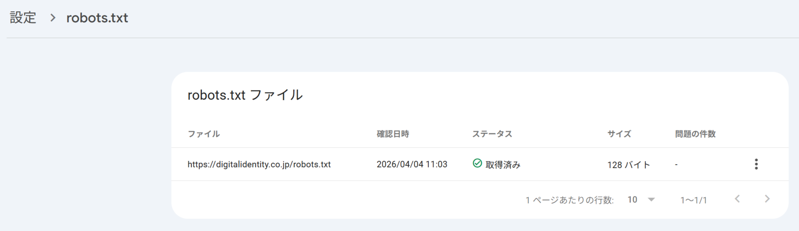
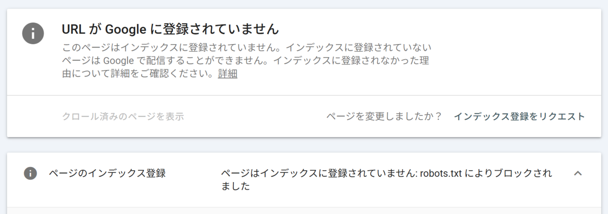

テクニカルSEO
基礎：HTML構造、1URL1コンテンツ、サイト構造：URL設計、内部リンク、クロール制御：robots.txt、サイトマップ、エラー・スパム対応、表示速度：ネットワーク／レンダリング／サーバー、Core Web Vitals、測定ツール、HTTPS
クローラの制御：robots.txtとmeta robots
クローラー（bot）は、サイト内のあらゆるページを無制限にクロールするわけではありません。サイトごとにクロールバジェット（クロールに割り当てられる量の目安）が存在するため、価値の低いページのクロールを抑え、重要なページに巡回を集中させる工夫が必要になります。
bot（クローラー）
Webサイトを自動的に巡回するプログラムの総称。GoogleやBingの検索エンジンクローラーのほか、生成AIサービスが使う専用クローラー（OpenAIのGPTBot、AnthropicのClaude-Webなど）も含まれます。
botの動作を制限する方法は、大きく3つあります。
| 方法 | 単位 | 対象 |
|---|---|---|
| meta robots | ページ単位 | HTMLファイル |
| X-Robots-Tag | ページ単位 | 非HTMLファイル（PDF・画像など） |
| robots.txt | サイト・ディレクトリ単位 | すべてのファイル |
meta robotsは、HTMLの<head>内に記述し、そのページ単位でクロール・インデックスの可否を指定するタグです。content属性はカンマ区切りで複数指定できます。
| content属性の値 | 制御内容 |
|---|---|
| index / follow（デフォルト） | インデックスさせる／リンクを辿らせる。記述がなければこの挙動になる |
| noindex | ページをインデックスさせない |
| nofollow | ページ上のリンクを辿らせない |
| none | noindex, nofollowと同じ意味 |
| nosnippet | 検索結果にスニペットを表示させない |
| max-snippet:[数値] | スニペットの最大文字数を指定する |
| max-image-preview:[設定] | 検索結果のサムネイル画像サイズを指定する（none/standard/large） |
| unavailable_after:[日時] | 指定日時を過ぎると検索結果に表示しなくする |
noindexを使う代表的な場面には、サイト内検索結果ページ（特に0件ヒットのページ）、質の低いページ、キャンペーンページ、会員限定ページなどがあります。noindexを指定する際は、長期的にはnofollowと同じ意味になるとGoogleも説明しているため、「noindex, nofollow」とセットで記述するのが基本です。
X-Robots-Tag
PDFや画像など、meta robotsを記述できない非HTMLファイルに対して、クロール・インデックスの制御を行うためのHTTPヘッダー。Google Search Central（公式ドキュメント）によれば、meta robotsで指定できるものと同じルールを、サーバーの設定でHTTPレスポンスに追加する形で指定します。
robots.txtは、サイトのルート直下（https://www.example.com/robots.txt）に設置する、クロールの可否をサイト・ディレクトリ単位で指定するテキストファイルです。基本構文は次の3要素で構成されます。
DisallowとAllowを併用すると、Disallowで拒否したディレクトリの一部だけを許可することも可能です。記述の優先順位は、より対象パスが限定されている条件が優先されるため、記述順は問いません。
特定のクローラだけを制御したい場合は、User-agentトークンを個別指定します。代表例として、画像用はGooglebot-Image、生成AIの学習用途ではGoogle-Extended（Gemini等）、OpenAIの学習用クローラはGPTBotなどがあります。「*」（全クローラ対象）を指定してもGoogleの広告品質チェック用クローラ（AdsBot）は対象にならない点に注意が必要です。
meta robotsとrobots.txtは、GoogleのクローラーだけでなくAIbot（生成AIの学習・回答生成用クローラー）にも基本的には有効ですが、すべてのAIbotが指示に従うことを保証するものではありません。機密性の高い情報の保護策としては過信せず、Digest認証など別の方法でアクセス制限をかけることが望ましいとされています。また、robots.txtは誰でも閲覧できるファイルであるため、管理者用ページなどセキュリティ上センシティブなパスを記述しないことも重要です。
Googlebotは1日1回程度robots.txtを取得しますが、サーバーが5xxエラーを長期間返し続けると、Googleがサイト全体のクロールを停止する可能性があるため、robots.txtが正しく取得できているかはSearch Consoleで定期的に確認することが推奨されます。


また、Googlebotがコンテンツを正しく認識するために、JavaScript・CSS・画像ファイルへのアクセスはブロックしないよう注意しましょう。